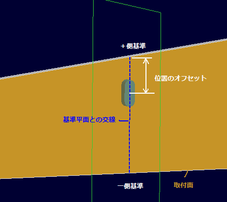
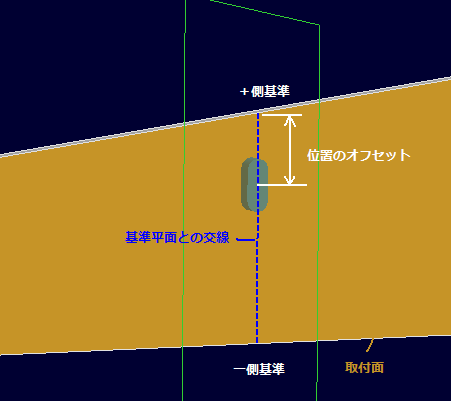
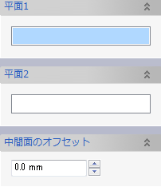
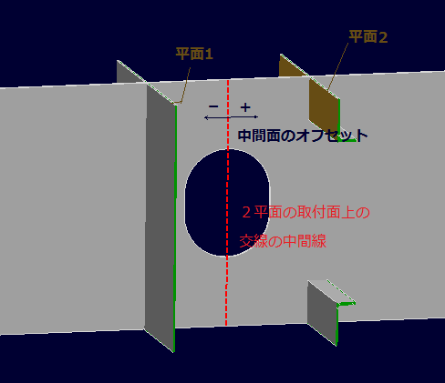
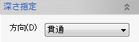
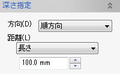
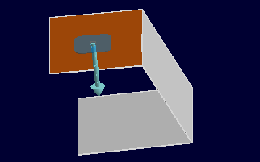
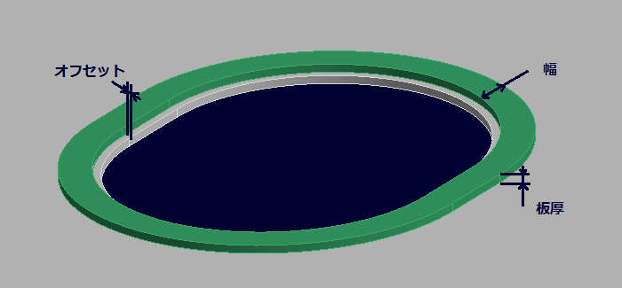

ホール
ホール
板部品にホールを空けます。


部材の角の頂点を中心位置としてスカラップを作成することができます。


操作方法
パラメータの入力後、作成形状がプレビュー表示されます。形状の確認後、OKボタンで実行します。
パラメータ
- 形状
ホールの形状、寸法を選択、設定します。(ダイアログの入力方法)


- 縦横の入れ替え
ホール形状の基準方向の縦横を逆にします。

- 取付面

ホールを空ける部材の面を選択します。 - 取付位置

以下の取付方法があります。
- 中心点指定
ホールの中心点(位置入力),幅方向(方向入力)を指定します。
(中心点は平面上になければ投影します。)
中心点や幅方向にはスケッチ上の点や線、任意の要素の頂点やエッジ,データム等を指定できます。


- 領域点指定
ホールの領域点(位置入力)を４点指定します。
中心点にはスケッチ上の点、任意の要素の頂点,データム点等を指定できます。
位置、方向は下図のように決定します。

- ロンジ間
ロンジ間の中心位置にホールを作成します。
向かい合うロンジ４つを選択します。位置、方向は下図のように決定します。


- 基準面
基準面からのオフセットで中心、方向を決定します。


- 平面との交線上
取付面と選択平面との交線上で中心、方向を決定します。
 

- 基準
取付面上の交線上のどの位置を基準とするかを指定します。
中点、＋側、−側のいづれかを選択します。 - オフセット
基準位置からのオフセットを指定して中心点の位置を移動することができます。
- 境界エッジ方向
通常ホールの向きは交線の方向となりますが、このオプションを指定することで取付面上のエッジの方向を基準とすることができます。（＋側、−側基準のときのみ。）

- スカラップ
通常ホールの基準位置はホール外形となりますが、このオプションを指定することでホールの中心を基準とすることができ、スカラップとして作成できます。（＋側、−側基準のときのみ。）

- 基準
- 2平面の中間
取付面上の２平面の交線の中間線を基準線としてその線上にホールを作成します。
基準線は平面1の法線方向を+として中間線からの移動量を指定することができます。
 基準位置は「平面との交線上」の場合と同様に指定します。
- 中心点指定
- 深さ指定(オプション)
 
通常は貫通ですが、ホールをあける部材ソリッドがコの字になっている場合などでは深さ、方向を指定することで干渉を回避します。
 - ダブリング作成(オプション)
ダブリングを作成するときは設定します。
ダブリングの大きさ（幅、板厚）,ホールからのオフセット量を指定します。
